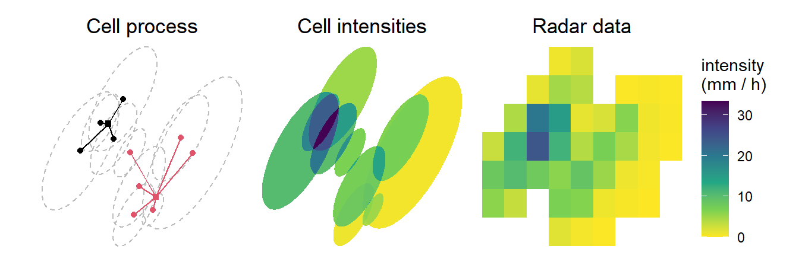

library(rainy)
library(patchwork)set.seed(8)
# Eccentricity
ecc <- 0.9
theta <- pi / 4
# Rotation matrix
mat1 <- matrix(c(cos(theta), sin(theta), -sin(theta), cos(theta)), 2, 2)
# Stretching matrix
mat2 <- matrix(c(1, 0, 0, 1 / sqrt(1 - ecc ^ 2)), 2, 2)
mat <- mat2 %*% mat1
# Storm centres
centre1 <- c(0.2, 0.8)
centre2 <- c(0.7, 0.3)
centres = list(centre1 = centre1, centre2 = centre2)
# Cell displacements
sd <- 0.135
n1 <- 4
cells1 <- matrix(rnorm(2 * n1, sd = sd), n1, 2) %*% mat
n2 <- 6
cells2 <- matrix(rnorm(2 * n2, sd = sd), n2, 2) %*% mat
cells <- list(cells1 = cells1, cells2 = cells2)
# Cell major axes
max1 <- rep(0.3, n1)
max2 <- rep(0.3, n2)
max1 <- rgamma(n1, shape = 10, rate = 30)
max2 <- rgamma(n2, shape = 10, rate = 30)
maxs <- list(max1 = max1, max2 = max2)
min1 <- max1 * sqrt(1 - ecc ^ 2)
min2 <- max2 * sqrt(1 - ecc ^ 2)
mins <- list(min1 = min1, min2 = min2)
# Cell intensities
intensity <- sample(rgamma(n1 + n2, shape = 1, rate = 0.2))
# Create the schematic
p1 <- schematicST(centres, cells, maxs, mins, ecc, theta, intensity,
theme = "void", which = 1)
p2 <- schematicST(centres, cells, maxs, mins, ecc, theta, intensity,
theme = "void", which = 2)
p3 <- schematicST(centres, cells, maxs, mins, ecc, theta, intensity,
theme = "void", which = 3)
p1 + p2 + p3